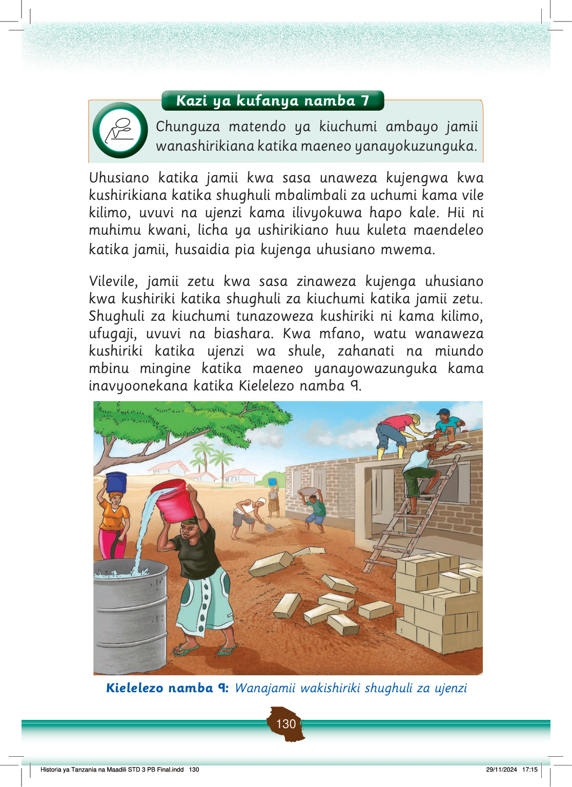

Watu wanaweza kushirikiana kwa kufanya kazi kwa pamoja ili kufikia malengo waliojiwekea.
Aidha, wanaweza kushiriki katika matendo ya uchumi kwa kununua mazao na vitu vingine vya biashara kutoka kwa wanajamii wanaowazunguka.
Tunaweza kununua vitu sokoni, dukani au mashambani kutoka kwa majirani zetu.
Pia, tunaweza kushiriki katika vikao vya maendeleo katika jamii zetu na kutoa michango ya fedha, vifaa au nguvu kufanikisha shughuli za maendeleo kwenye maeneo yanayotuzunguka.
Matendo haya yatasaidia kujenga na kukuza uhusiano na watu wanaotuzunguka.
Hivyo, kushiriki katika shughuli za kiuchumi hujenga uhusiano mwema katika jamii.
Tunapaswa pia kutenda matendo ya kujenga uhusiano wa urafiki na watu wengine.
Uhusiano mwema katika jamii hujenga maadili mema.
Tanzania ni miongoni mwa nchi zenye uhusiano mzuri kati ya jamii na jamii.
Uhusiano na ushirikiano katika jamii umewasaidia watu kuishi kwa upendo na amani.
Amani na upendo tulionao ni matokeo ya uhusiano na ushirikiano uliopo miongoni mwetu Watanzania.
Jamii ya sasa inapaswa kudumisha na kuendeleza uhusiano mwema ambao ulikuwepo katika jamii za Watanzania tangu kale.
Uhusiano mwema utasaidia jamii ya sasa kujenga umoja na upendo katika jamii na kuondoa ubaguzi.
Uhusiano mwema ni chanzo cha maendeleo.
Historia ya Tanzania na Maadili STD 3 PB Final.indd 131
29/11/2024 17:15
Kazi ya kufanya namba 8
Andika matendo mengine ya kiuchumi yanayodumisha ushirikiano na uhusiano na watu wengine katika jamii.